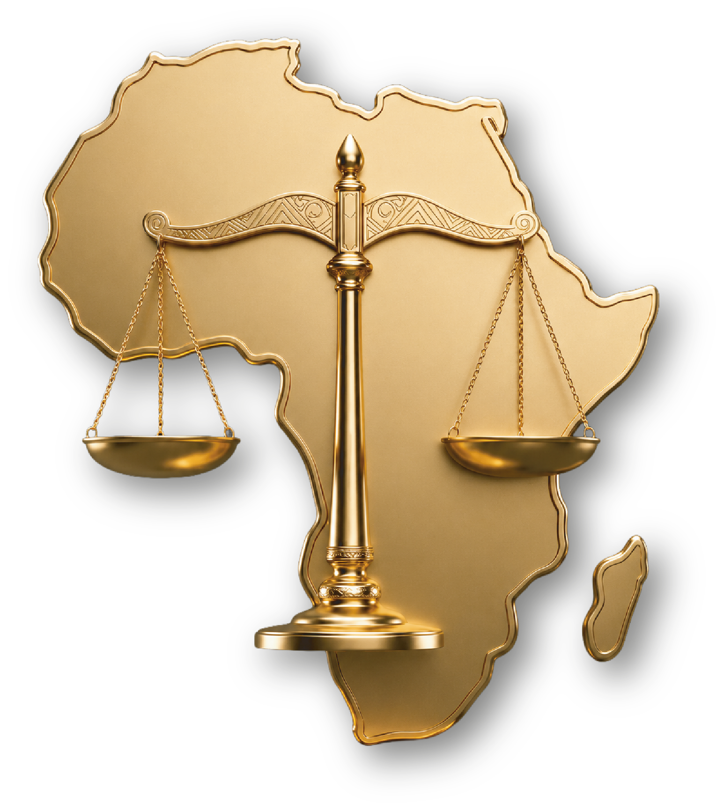

L'Académie Africaine de Droit Public réunit universitaires, magistrats, hauts fonctionnaires et décideurs autour d'une même ambition : penser, comparer et accompagner les transformations de l'État et du constitutionnalisme sur le continent.

L'Académie Africaine de Droit Public (AADP) réunit universitaires, magistrats, hauts fonctionnaires et responsables publics autour d'une même exigence : doter le continent d'un espace scientifique consacré à la conduite des réformes constitutionnelles. Sa première édition des Journées d'Étude inaugure un rendez-vous appelé à faire référence.
Depuis 2020, l'Afrique connaît une séquence politique et institutionnelle exceptionnelle. Coups d'État, transitions politiques, référendums constitutionnels et débats sur la limitation des mandats témoignent de l'actualité brûlante de la question constitutionnelle. La Constitution demeure un instrument privilégié de transformation de l'État, de régulation des conflits politiques et de recherche de stabilité institutionnelle.
Cette actualité met en lumière le rôle croissant des juridictions constitutionnelles — véritables gardiennes de l'ordre constitutionnel — comme l'ont illustré les crises du Sénégal, du Kenya ou de la République démocratique du Congo. Pourtant, les espaces de formation spécialisés consacrés aux réformes constitutionnelles demeurent rares. L'Académie entend combler ce manque, en formant une nouvelle génération de décideurs capables de conduire des réformes crédibles, inclusives et adaptées aux réalités africaines.
Produire et transmettre un savoir de haut niveau en droit public africain ; renforcer les capacités des acteurs appelés à concevoir, conduire ou accompagner les réformes institutionnelles du continent.
Devenir la plateforme panafricaine de référence où s'élabore la pensée constitutionnelle de l'Afrique francophone — un lieu où la doctrine rencontre la pratique des institutions.
Rigueur scientifique, indépendance, esprit comparatiste, responsabilité publique, éthique institutionnelle et attachement aux principes démocratiques et à l'État de droit.
Les travaux de l'Académie — formations, journées d'étude, publications — poursuivent six objectifs permanents.
Comprendre les processus de production, de révision et de transformation des Constitutions africaines, et identifier les facteurs de réussite ou d'échec d'un processus constituant.
Approfondir la compréhension des enjeux liés aux processus électoraux, à la stabilité institutionnelle et à la consolidation de l'État de droit sur le continent.
Examiner le rôle des juridictions constitutionnelles dans la régulation des rapports de pouvoir et la protection des normes constitutionnelles.
Favoriser une meilleure compréhension des interactions entre les Constitutions africaines, le droit international et les normes régionales de l'Union africaine.
Renforcer les capacités des jeunes chercheurs, hauts fonctionnaires et responsables publics, et contribuer à former des décideurs capables de mettre en œuvre des réformes adaptées.
Encourager une culture de gouvernance constitutionnelle fondée sur la responsabilité publique, l'éthique institutionnelle, la stabilité des institutions et le respect des principes démocratiques.
L'AADP s'appuie sur une organisation collégiale qui garantit son indépendance scientifique et la qualité de ses travaux.
Composé de professeurs et de praticiens de référence, il définit les orientations académiques, valide les programmes et évalue les contributions soumises à l'Académie.
Il assure la coordination des activités, l'organisation des journées d'étude et le lien permanent avec les membres, les partenaires et les institutions.
Enseignants-chercheurs, magistrats, hauts fonctionnaires et jeunes chercheurs associés, réunis en réseau à l'échelle du continent et de la diaspora.
Une réunion exceptionnelle de professeurs, présidents de juridiction et experts venus de tout le continent et des grandes universités partenaires.
◆ Et de nombreux autres universitaires et praticiens réunis dans les séminaires, masterclass et ateliers — Dr. Guelord Luema (Paris-Est Créteil), Dr. Amadou Imerane (Niamey), Me Chancel Funga (Nice), Dr. Élysée Hator (Paris-Saclay), M. David Aloco (Bordeaux), Me Ronsard Malonda, Dr. Isaac Muzigwa (Toulon), Dr. Puis D'joli (Paris 13), M. Jonas Tshibayi Ntumba (Strasbourg), Pr. Ngondankoy, Pr. Daniel Mbau (Kinshasa), Pr. Tshilumbayi, Pr. Martin Mulamba (Kinshasa), Dr. Wasenda.
Chaque axe articule une problématique générale et une série de sous-thèmes travaillés lors des séminaires, masterclass et ateliers de l'Académie.
Acteurs, méthodes et controverses des processus constituants.
Restaurer la confiance démocratique par des processus électoraux crédibles.
Régimes politiques, équilibre des pouvoirs et stabilité des institutions.
Les juges face au pouvoir : contrôle, régulation, protection des droits.
Sécurité, climat, numérique et souveraineté : réformer l'État pour les enjeux nouveaux.
L'AADP est une plateforme ouverte de réflexion : chercheurs et praticiens peuvent proposer une analyse, une note, un article ou une communication sur l'un des axes de travail. Les propositions retenues sont discutées lors des activités de l'Académie et peuvent être publiées sous son égide.
Proposez — envoyez votre résumé (300 à 500 mots) via le formulaire, en précisant l'axe de rattachement.
Évaluation — le Conseil scientifique examine chaque proposition et vous répond avec un avis motivé.
Valorisation — présentation en séminaire, discussion lors des journées d'étude ou publication par l'Académie.
Au-delà des travaux scientifiques, l'Académie s'appuie sur un réseau d'institutions, de partenaires et de personnalités qui soutiennent son action et participent à sa vie. Plusieurs voies d'engagement sont ouvertes.
Enseignants-chercheurs, magistrats, hauts fonctionnaires et praticiens du droit public peuvent solliciter leur adhésion au Collège des membres.
Universités, juridictions, organisations régionales et institutions publiques : nouer un partenariat scientifique, pédagogique ou éditorial avec l'AADP.
Contribuer financièrement au financement des bourses, publications et éditions des Journées d'Étude — dons, mécénat, parrainage.
Les activités de l'Académie s'adressent à un public diversifié, avec une attention particulière portée aux futurs décideurs et aux acteurs impliqués dans les processus de réforme.
Doctorants, jeunes docteurs et étudiants en droit, science politique, relations internationales et disciplines connexes.
Enseignants-chercheurs travaillant sur les questions constitutionnelles, institutionnelles et électorales africaines.
Magistrats, membres des juridictions constitutionnelles et personnels des administrations publiques.
Parlementaires, collaborateurs parlementaires, membres des commissions électorales et cadres des institutions de gouvernance.
Hauts fonctionnaires, conseillers juridiques des administrations et responsables de l'élaboration des politiques publiques.
Membres des cabinets présidentiels, gouvernementaux ou parlementaires participant aux processus de réforme institutionnelle.
Jeunes leaders, responsables politiques et acteurs publics appelés à exercer des fonctions de décision ou d'encadrement institutionnel.
Responsables d'organisations régionales africaines, internationales et de la société civile actives dans la démocratie et l'État de droit.
Journées d'étude, séminaires et masterclass rythment la vie de l'AADP. Chaque session donne lieu à des inscriptions ouvertes au public cible de l'Académie.
Cinq journées structurées autour de la progression pédagogique Comprendre · Comparer · Réformer · Négocier · Proposer, combinant conférences, masterclass, séminaires, études de cas et ateliers de rédaction constitutionnelle. Avec la participation, entre autres, du Pr. Blaise Tchikaya, du Pr. Évariste Boshab, du Pr. Abdoulaye Soma, du Pr. Oumarou Narey et du Pr. Jean-Louis Esambo.
Rejoignez le réseau de l'Académie, soumettez vos travaux ou inscrivez-vous à la prochaine session des Journées d'Étude.